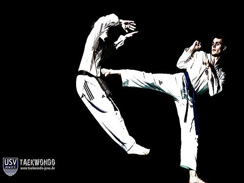

As you know, I’m Mikael Nortikyan. I was born on March 31st, 1999, so I’m still considered a 90s kid. 98.37 % of the teachers I’ve had throughout my life have gotten my name wrong as you can imagine. Well, I’m into listening to music, coding (obviously), making jokes or parodies. I like to create or do things that others haven’t thought of yet. I would like to say that I started the speaker trend at school, an I’m not talking about the little crappy speakers, I’m talking about the actual loud and nice ones! As you can tell from my last name, I’m Armenian brrro, but that doesn’t mean that I listen to Armenian music only. I mostly listen to Old School Rap or Gangsta Rap, but I also listen to new artists like YG, DJ Mustard, Rick Ross, Drake, and more. I like pranking people, I won’t say what I’ve done, but trust me when I say I do. I like watching the Fresh Prince of Bel-Air, Married… With Children, Family Guy, The Simpsons, American Dad, and a lot more shows. If you ever wanna ask me anything more about me, here’s a link for ya: http://ask.fm/miko_47
If I put something to my mind, I could make it a skill. But the skills I have at the moment are varying. I could edit and improve audio files, censor, sound check, splicing, and such. I could recover corrupted files, varying on how severe. I could make a website (duhh). I could root android phones, tablets, music players, and some iPhones if, as I said, I put my mind to it. I could run a newer version of an Android’s OS, on an older version of the Android phone, also varying on phones age. I could make cookies, brownies, and mostly anything with the directions on the back of the box, which I must say turn out to be the bomb! I could also make movies using programs like Microsoft Movie Maker, Sony Movie Platinum, and Sony Vegas Pro.
Around the age of five, I took Gymnastics for a period of time. I loved that white powder that you would put on your hand, it just felt really good! Besides that though, I had great fear of heights, which made me scared when I had to hold onto rings about 20 or so feet in the air. After Gymnastics, around the age of 9 or 10, I took up Taekwondo. I practiced this art of martial-arts for about 5 to 6 years, ending with a Junior Black Belt, so don’t screw around with me.